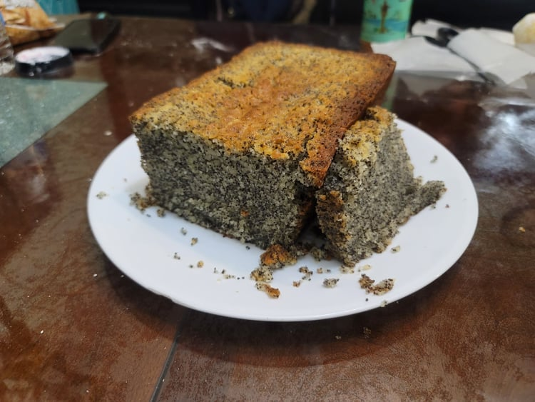

Poppy Seed Cake

Ingredients:
- 1 cup Poppy seeds
- 1 cup Milk
- 1 cup Butter
- 2 cups Flour
- 2 cups Sugar
- 3 Eggs, yolks and whites separated
- 2 tsp Vanilla extract
- 1/2 tsp Salt
- 2 1/2 tsp Baking powder
- Optional: Powdered sugar
Instructions:
- In a large saucepan add the poppy seeds and milk. Bring to a boil and then remove from heat. Let rest for 20 minutes.
- Preheat oven to 350 degrees Fahrenheit and grease and lightly flour a large loaf pan.
- In a bowl, cream together butter and sugar using an electric mixer. Add egg yolks, vanilla, and poppy seed-milk mixture, and beat until smooth. Gradually add 2 cups flour, salt and baking powder and mix well.
- Place the egg whites into a large bowl. Use an electric mixer to whip them into stiff peaks. Fold the egg whites into the batter.
- Scrape the batter into the loaf pan and bake until a toothpick inserted into the cake comes out clean, about 1 hour.
- Let the cake rest for about 15 minutes before removing from the pan. When cool, optionally dust cake with powdered sugar.